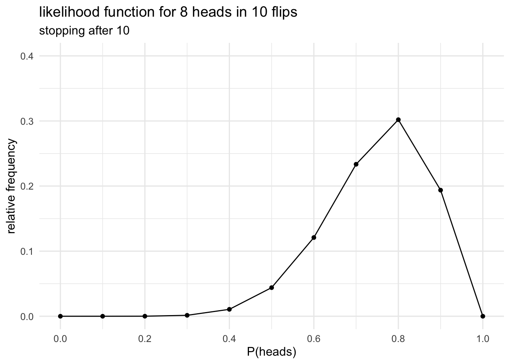
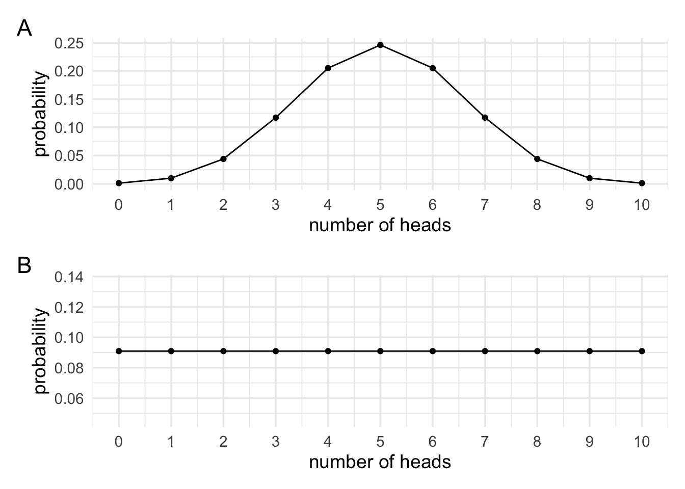

Chapter 3 An alternative to p values

Coming up with an alternative to p values requires us to rearrange our thinking a bit. So let’s first get straight what we’re doing with frequentist inference. In frequentist inference we set some parameter to a certain value (\(\theta\)), we then generate data from imaginary experiments using that parameter setting, and we then compare our data to the data from those experiments. We then ask the question: “Given that parameter value, how surprising is our data?†At no point are we making inferences about the value of \(\theta\). We set the value, and we ask a question about our data in relation to all the possible data that might be generated.
To think about what an alternative might look like, let us think back to our earlier example on the different meanings of probability. With p-values we thought about probability in terms of relative frequency. We were asking “how often?†questions. But I also mentioned another example. The example of being 90% sure that the accused committed a crime. If we want to be rational humans, when we make claims like this what we usually do is examine the evidence. We compare whether there is more evidence for the accused’s guilt or the accused’s innocence. That is, we take the courtroom evidence and examine whether it supports hypothesis 1 (the accused is guilty) or hypothesis 2 (the accused is innocent). To do this we balance of probabilities. Is is more probable that we’d see this evidence if hypothesis 1 was true, or is it more probable that we’d see this evidence if hypothesis 2 was true? (In a civil trial we’d just weigh up the probabilities, but in a criminal trial we’d have to also examine whether this difference in probabilities exceeds some threshold. We’ll leave this issue of thresholds for now). Might we be able to apply the same kind of thinking to statistical evidence?
To understand the concept of statistical evidence, let’s go back to our coin flipping example. In our coin flipping example, we collected 10 flips and found 8 heads and 2 tails. Our frequentist analysis asked something like, “is this data surprising?”. But we could ask another question. That question might go something like this: “Is it more likely that the bias is 0.6 or that the bias is 0.8 given that we’d obtained 8 heads in 10 flips?”
To try and answer this question, we’ll again create some simulations. We’ll start by creating two sampling distributions. For now we’ll keep things simple and we’ll create these sampling distributions on the assumption that I intended to flip the coin 10 times. To create our sampling distributions we’ll first set \(\theta\) to 0.6 and run the simulations, and then we’ll set \(\theta\) to 0.8 and run the simulations. I know the distribution they’ll follow, so I’ll just compute the distributions directly rather than actually running the simulations.
We can draw the distributions of the possible data that would occur for different values of P(heads) = \(\theta\). In each of the plots, our actual observation will be highlighted. Although we’re “simulating†all possible observations, you’ll see that we’re only going to care about our actual observation. We will want to know the relative frequency with which that result occurs, not the frequency of results that didn’t but might’ve occurred. I’m going to draw several distributions not just two that correspond to the values of \(\theta\) that we’re interested in.
Let’s take these plots and create a new one out of them. Since we’re just interested in our specific observation we’ll take all the marked points and put them on a plot of their own. Now we’ll still have relative frequency on the y-axis, but on the x-axis we won’t have the observation anymore (because we’re only focused on one specific outcome). Instead, we’ll have \(\theta\) on the x-axis.

This new plot that we’re created illustrates what’s know as the likelihood function. The likelihood function describes the relationship between values of the parameter and our data. It’s made up of slices of the sampling distribution-the slices that correspond to our actual observation. Remember that when we were doing inference with the sampling distribution we were looking at the extreme tails of the sampling distribution. That is, we were interested in the entire shape of the sampling distribution. Now we’re instead only interested in the thin slice that corresponds to our observation.
3.1 Doing inference with likelihoods
The likelihood plays a key role in Bayesian inference. Inferences on the basis of likelihoods are derived from what is known at the law of likelihood. Simply stated, the law of likelihood says that for a given pair of hypotheses—for example, \(\mathcal{H}_1\) that the coin bias is P(heads)=0.6 and \(\mathcal{H}_2\) that the coin bias is P(heads)=0.8—then data support \(\mathcal{H}_1\) over \(\mathcal{H}_2\) if the likelihood of \(\mathcal{H}_1\) exceeds that of \(\mathcal{H}_2\). Or, put another way, if our data would be produced more often if \(\mathcal{H}_1\) were true than if \(\mathcal{H}_2\) were true, then the data provide support for \(\mathcal{H}_1\) over \(\mathcal{H}_2\) (See Hacking, 1965 Chapter 5, for both formulations).
This definition might seem a little opaque, but we can read these likelihood values straight off our likelihood plot. The height of the likelihood plot, at each value of \(\theta\), tells you the probability of obtaining your data given that value of \(\theta\). If the likelihood function is higher at \(\theta=0.8\) than \(\theta=0.6\) then the probability of obtaining our data would be higher if \(\theta\) was 0.8 than it would be if \(\theta\) was 0.6. Consequently, our data support the hypothesis that \(\theta=0.8\) over the hypothesis \(\theta=0.6\). A key point here, that’s worth stressing, is that this is a comparison between two specific hypothesis. Does this data support this one specific hypothesis over this other specific hypothesis. What you’re doing here is weighing up probabilities just like you would do in a courtroom.
3.1.1 A brief detour back to sampling rules
Before we continue, let’s just go back to something from the previous section. I made a big deal about how our sampling rules change the shape of the sampling distribution, and that this then changes the inferences that we make. This is the case even if nothing changes about our actual data. But do different sampling rules change the likelihood? To test this out, we’ll generate a new set of sampling distributions using the other sampling rule (sampling until we get 2 heads). And from these sampling distributions we’ll generate some likelihoods.

We can see that these sampling distributions look very different to the sampling distributions that we generated above. But what we’re interested in are just the highlighted points, because we’ll use these to generate our likelihood.

The new likelihood might, at first glance, look different to the one we generated earlier, but it’s just a scaled version of the earlier likelihood. We can check this just by rescaling the two likelihoods so that they both have a max of 1.
Now that they’re been rescaled we can see that they’re they same. Note that scaling changes the absolute distance between points on the likelihood, but it doesn’t change the relative distance between the points. When we want to know the difference between two likelihood values we take the ratio of these two values. The ratio gives us the relative distance between the heights on the likelihood function, and the relative distance doesn’t change with scaling.
More importantly, however, what this demonstrates is that when we do inference with likelihoods instead of sampling distributions, things like stopping rules, data that wasn’t collected but might have been collected, and all those other sorts of things that were tricky about p-values don’t come in to play. We only have the worry about the data we actually have, and the likelihood which relates parameter values to data.
3.1.2 The likelihood ratio
The likelihood ratio is going to be our measure of evidence of how much the data supports one hypothesis over another. If the likelihood at point one (\(\theta_1\)) is four times the larger than the likelihood at point two (\(\theta_2\)) then the data are four times more likely under the hypothesis \(\theta = \theta_1\) than the hypothesis \(\theta = \theta_2\). Or simply put, the data supports the hypothesis \(\theta=\theta_1\) over \(\theta=\theta_2\) but a factor of 4 to 1.
Let’s look at the likelihood for our actual data and our two hypotheses about the coin bias. Just to drive home the point that the sampling rule doesn’t matter, I’m going to work out the likelihood ratio for the sampling rule where I flip the coin 10 times and the sampling rule where I flip the coin until I get 2 heads and just happen to flip it 10 times. We’ll see that the absolute values of the likelihoods change (as we saw in the plots above), but that the likelihood ratio between the hypotheses don’t change.
To make sure that the numbers work out correctly, I won’t use simulations to generate the likelihoods. Instead I’ll just generate each likelihood with the relevant formula.
First, for version 1, where I flip the coin 10 times (binomial sampling rule).
The likelihood for \(\mathcal{H}_1\) (P(heads) = 0.6) is 0.12
The likelihood for \(\mathcal{H}_2\) (P(heads) = 0.8) is 0.3
The likelihood ratio is 0.4
The data are 0.4 times more probable under \(\mathcal{H}_1\) than \(\mathcal{H}_2\)
Second, for version 2, where I flip the coin until I get 2 hears (negative-binomial sampling rule).
The likelihood for \(\mathcal{H}_1\) (P(heads) = 0.6) is 0.1
The likelihood for \(\mathcal{H}_2\) (P(heads) = 0.8) is 0.24
The likelihood ratio is 0.4
The data are 0.4 times more probable under \(\mathcal{H}_1\) than \(\mathcal{H}_2\)
3.1.3 A note about likelihood functions and probability distributions
One common misconception about likelihood functions is that they’re probability distributions. This misconception can come in a few different forms, so it’s worth just stressing again what a likelihood function is.
First, we can tell a likelihood function isn’t a probability distribution, because for a probability distribution the area under the curve would have to sum to 1. Each point on a probability distribution gives the probability of a specific event. The whole curve describes all the events that could happen, and the area under the curve gives the probability that one of the possible events happens. That is, it is the sum of all the individual probabilities of the different events.
In the plot below, we can see the likelihood functions for different events (different numbers of heads in 10 flips). We can see that the area under the curve varies in each case. If these were probability distributions then the area under the curve in each case would be 1.

This misconception about likelihood functions being probability distribution often takes the form of thinking that the likelihood function tells use the probability of the parameter being a specific value. That is, it tells us that there’s a higher probability that \(\theta=\theta_1\) than \(\theta=\theta_2\), given our data. Put another way, this misconception states that the likelihood tells us \(p(\theta|y)\). This quantity, however, is what’s know as the posterior probability. Rather, the likelihood tells us the reserve conditional, or \(p(y|\theta)\). That is, it tells use the probability of obtaining our data given different values of the parameter.
To emphasise that the likelihood is not a probability distribution it is often denoted \(\mathcal{L}(\theta|y)\).
3.2 Testing more complex hypotheses
So we’ve seen that comparing likelihoods (by taking their ratio) can tell us which hypothesis is better supported by the data. However, there’s a couple of problems with what we’ve done up until now. First, how do we know explicitly set a threshold for when we would start digging for treasure. Is there also a threshold for likelihood ratios? To answer this question, we’re going to have to take into account a lot of additional factors. And the answer to this question is probably going to be context-dependent. For example, if we’re placing bets on hypotheses, we’re probably going to want to take into account the relative pay-offs. If we’re using evidence to decide somebody’s guilt in a court case, we’re probably going to want to take into account things like “reasonable doubt”. In short, there’s not a straight forward answer to this question, so we’ll set it aside for now. Instead, we’ll turn to the second problem.
The second problem with what we’ve done up until now is that we’ve just been comparing single point hypothesis. We can can say, for example, whether the data supports P(heads) = 0.5 over the hypothesis P(heads) = 0.8, and we can quantify this level of support. But usually, we are not comparing two simple hypotheses like this. Our hypotheses take a more complex form like: “Is the coin fair?”
How might we go about answering this question?
To come up with a way to answer this question we’re going to think about hypotheses in terms of predictions. Our first hypothesis, \(\mathcal{H}_0\), will be that the coin is fair. And we’ll say a fair coin has a bias of 0.5. What do we predict will happen if we flip the coins 10 times? Most of the time it’ll show around about 5 heads and 5 tails, but it will also rarely show 1 head and 9 heads etc. If we plotted it, it would just be our sampling distribution from before.
For \(\mathcal{H}_1\), that the coin isn’t fair, what do we predict will happen if we flipped it 10 times? Before we can work this out we need to think a little bit about what it means for a coin not to be fair. For now, let’s say that it means that it can have some bias between 0 and 1, but that we don’t know what it is. For our fair coin, if we collected a very large number of samples the most common outcome would be 5 heads and 5 tails, but would be the most common outcome with our unfair coin? Would it be 5 heads and 5 tails? Would it be 0 heads? 1 head? 9 heads? Do we have any grounds for predicting that one outcome would be more common than another outcome? We arguably do not. If so, then if I asked which of the 11 possible outcomes (from a sample of 10 coin flips) is more probable than the others you might say none. If none of the outcomes are more probable than any of the other outcomes, and given that there’s 11 possible outcomes, then our prediction must be that each outcome has a 1 in 11 chance of occurring.
Below, we can see plots of our two predictions. First, what we would predict if we knew the coin bias was 0.5, and second what we would predict if we had no reason for favouring one outcome over another.

Now that we have a intuition for hypotheses in terms of predictions, let use formalise it a bit. And instead of thinking about all the data that might be produced let’s just try and think about the probability of obtaining our data of 8 heads in 10 flips. If a coin is fair, then in 10 coin flips there are exactly \(2^{10}\) possible sequences and 45 of these sequences would give 8 heads in 10 flips. Therefore, if the coin is fair, then the probability of obtaining our result of 8 heads in 10 flips in \(\frac{45}{1024}\), or about 0.044. I’ve worked this out exactly, but we’d get the same value if we ran the simulations, or if we just looked at the likelihood function at \(\theta=0.5\). This is after all, what the likelihood function tells use: the probability of obtaining our data for a given value of the parameter.
Now on to the more complex example where the coin bias is some unknown value between 0 and 1. What now is the probability of obtaining our data. One good strategy of dealing with unknowns is to average across the possibilities. For example, if I didn’t know what the coin bias was, but I knew it could either be 0.5 or 0.6, then to work out the probability of obtaining our current data I could just work out the probability of obtaining our current data if the bias was 0.5 (~0.044), and then work out the probability of obtaining our current data if 0.6 (~0.121), and then just average them together (~0.082). Again, I just take the values from the likelihood function at \(\theta=0.5\) and \(\theta=0.6\) and aveage them together.
But in our example it’s not just the case that the bias of the coin could be 0.5 or 0.6. For our second hypothesis we said it could be any value between 0 and 1. That is, hypothesis is the set \(\Theta = \{\theta_1,\theta_2,...,\theta_n\}\) where each \(\theta_1\) to \(\theta_n\) is some value between 0 and 1. To keep things simple for now, we’ll say that \(\Theta =\{\theta_1=\frac{0}{10}, \theta_2=\frac{1}{10},...,\theta_{11}=\frac{10}{10}\}\). An average is just a sum where each value is multiplied by \(\frac{1}{n}\), therefore, the average across these 11 values would be:
\[\sum_{i=1}^{11}\mathcal{L}(\theta_i|\mathbf{y})\cdot{}\frac{1}{11}\]
This gives a value of approximately \(\frac{1}{12}\), which is pretty close to the value of \(\frac{1}{11}\) we worked out earlier. Why is it not the same? Well, earlier, we said it could be any value between 0 and 1. We’re only looking at 11 values. Let’s instead look at 101 values between 0 and 1. Now \(\Theta = \{\theta_1=\frac{0}{100}, \theta_2=\frac{1}{100},...,\theta_{101}=\frac{100}{100}\}\). Now we get a value that’s even closer to \(\frac{1}{11}\). To get to exactly \(\frac{1}{11}\), however, we’re going to have to look at even more points. Instead of spacing the points out by \(\frac{1}{10}\) or \(\frac{1}{100}\), we’re going to need infinitesimally small spacing. That’s means we just switch out the sum for an integral, but the logic is the same. We’re still just taking an average.
\[\int_{\theta\in\Theta}\mathcal{L}(\theta|\mathbf{y})d(\theta)\]
Now that we’re taking an integral, we get exactly \(\frac{1}{11}\).
Now that we have these two values: First, \(\frac{45}{1024}\), which gives the probability of obtaining 8 heads in 10 flips if \(\theta=0.5\), and second, \(\frac{1}{11}\), which the probability of obtaining 8 head in 10 flips if \(\theta\) was some unknown value between 0 and 1, what can we do with them? Well, we can just take the ratio! Just like we did with the two simple point hypotheses, we can also take the ratio between our simple point hypothesis and our more complex hypothesis. Taking this ratio tells us that’s we’d be \(2\frac{34}{495}\) times more likely to see our data if \(\theta\) was some unknown value between 0 and 1 than if \(\theta=0.5\).
Thinking back to the law of likelihood that we covered at the start of this section, we said if our data would be produced more often if \(\mathcal{H}_1\) were true than if \(\mathcal{H}_2\) were true, then the data provide support for \(\mathcal{H}_1\) over \(\mathcal{H}_2\). This is exactly the number that we’ve just worked out.
3.2.1 There’s more than one way to average
Above we worked out two values. The second number we calculated by averaging the likelihood function, but the first number we calculated by just taking a single point on the likelihood function. So one involved an average and the other did not. Or did it? We can actually think of both as involving an average of the likelihood function. They’re just different kinds of average. We can view both as taking a weighted average, where different values contribute more or less to the average. For the second number, all values in the average were weighted equally. That is, it was just like a regular average. For the first, it can be viewed as taking an average where the likelihood value for \(\theta=0.5\) is given a weight of 1, and all over values of given a weight of 0. We could visualise these weighting in the plots below.
These weightings can be thought of as probability distributions. We are going to call these priors. Mathematically, they represents the weights that we apply to the values that we average together. But what do they represents conceptually. One way to think of them is that they represent our beliefs about the parameter value (in this case the coin bias). Or, that they represent our model of the hypothesis-that is, they represent what the hypothesis has to say about the parameter value. So the fair coin hypothesis represents is a model that says the coin bias is exactly 0.5. The other hypothesis is a model that say all values of the coin bias between 0 and 1 are equally probable.
At the start of this section we said that for our alternative for a fair coin we’d say that all values of the coin bias were equally likely, and this is what we’d mean by an unfair coin. But this is only one possible model of an unfair coin. We might actually think that if a coin is unfair then it’ll show heads far more often than tails. Or, we might think that unfair coins will show tails more often than heads. We might even think that unfair coins will behave very similarly to fair coins, but they’ll just outcomes of 5 head and 5 tails a little bit less often than the \(\frac{252}{1024}\) that we’d see with a perfectly fair coin. These are all different models that we might have about unfair coins. We can represent these hypotheses in terms of what they say about the coin bias parameter. That is, we can represent them as weights or priors. We’ll learn more in the next section about how to specify these, but for now I’ll just generate some plot.

In panel A, values of the coin bias closer to 1 (show heads all the time) and given more weight than values closer to 0 (never show heads). This means we except the coin to show heads more often. In panel B, we see the opposite. Finally, in panel C, we weight values closer to 0.5 (fair) higher than values closer to 0 or 1. That is, we don’t think the coin bias is exactly 0.5, but we think values closer to 0.5 are more probable than values further away from 0.5.
Now that we’re taking a weighted average, our earlier formula before:
\[\int_{\theta\in\Theta}\mathcal{L}(\theta|\mathbf{y})d(\theta)\]
Now just becomes:
\[\int_{\theta\in\Theta}\mathcal{L}(\theta|\mathbf{y})p(\theta)d\theta\]
In words we’d read this as:
The probability of obtaining our data under the specified model is equal to the integral of the likelhood (the model of the data) multiplied by the prior (the weights).
We might denote this as \(p(Y|\mathcal{M}_i\)) or simply \(\mathcal{M}_i\). When comparing two models—for example, \(\mathcal{M}_1\) and \(\mathcal{M}_0\), we take the ratio as follows:
\[\frac{\mathcal{M}_1}{\mathcal{M}_0}\]
Try not to be too intimidated by the formula above. It just means that we’re working out the probability of obtaining our data for a given value of the parameter, and that we’re doing this for a range of parameter values. And finally, we’re taking a weighted average of these. There’s only 3 parts to the formula.
The likelihood, which tells us the probability of obtained our data at a specific value of the parameter: \(\mathcal{L}(\theta|\mathbf{y})\)
The prior, which determines the weights for weighted average of the likelihood values: \(p(\theta)\)
The integral, which performs the “averaging†across all the different values of the parameter range: \(\int_{\theta\in\Theta}...d\theta\)
3.2.1.1 Visualising predictions
We can also represent these different models of the coin bais in terms of what outcomes we’d predict, just like we did with the earlier predictions. In the next section, we’ll also learn about how to turns priors into predictions, but for now we’ll just look at some plots. In each of these plots we’ll show what we would predict if the coin was exactly fair overlaid on each of these different models of unfairness. In each of the plots we’ll highlight our actual outcome of 8 heads in 10 flips.
In panel A, we see the predictions from our fair coin model against our predictions from a model where the coin shows heads more often. In panel B, we see the fair coin predictions against a coin that shows tails more often. In panel C we see our fair coin model again a model where the bias is just slightly off from fair. And finally in panel D, we see the predictions of the fair coin model against a model where we have no reason for thinking that one outcome is more likely than any other outcome.
In each of these panels we can weigh up the evidence for whether our data support one model over the other by looking at whether our data would be produced more often if \(\mathcal{H}_1\) were true than if \(\mathcal{H}_2\) were true. That is,w we can see whether the data provide support for \(\mathcal{H}_1\) over \(\mathcal{H}_2\) just by looking at whether the blue highlighted point is higher (more probable) than the red highlighted point (less probable).
## Warning: package 'magrittr' was built under R version 4.1.2